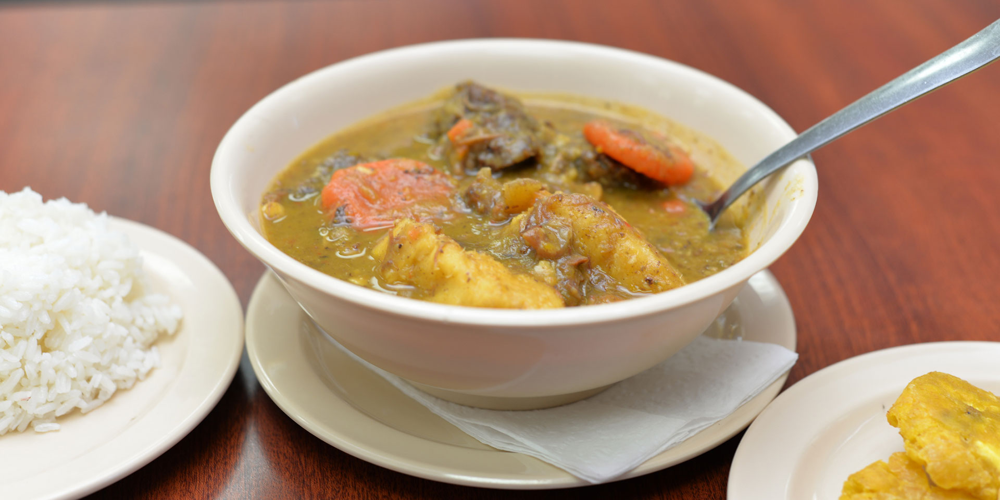

Home
Sancocho Dominicano
Historia y Cultura

El Plato de la Celebración
El sancocho es el plato nacional por excelencia. No es solo una sopa espesa; es un evento social. Se prepara en celebraciones, días de lluvia o simplemente para reunir a los amigos. Su origen es una mezcla de la "olla podrida" española con las técnicas de cocción de los esclavos africanos y los víveres locales de los tainos.
Ingredientes
Las Carnes (El famoso "7 carnes")
- Res, Pollo, Cerdo (las básicas)
- Chivo, Longaniza, Costillitas ahumadas y Chuleta
Los Víveres y Sazón
- Plátano verde, Yautía (blanca y coco), Ñame y Yuca
- Mazorcas de maíz (cortadas en trozos)
- Sazón: Cilantro ancho, naranja agria, ajo, orégano y sal.
Proceso de Preparación
1. El Ablandado
- Sellar carnes: En una olla grande (caldero), dora las carnes con un poco de aceite y sazón natural.
- Hervir: Agrega agua suficiente y deja cocinar hasta que las carnes más duras (res y chivo) estén tiernas.
2. Los Víveres
- Añade los víveres empezando por los más duros (ñame, yuca) y luego los más blandos (plátano, auyama).
- Agrega el maíz y deja que todo hierva a fuego medio.
3. El Espesor (El secreto)
- Cuajar: Cuando la auyama se ablande, retira algunos trozos, licúalos o májalos y devuélvelos a la olla. Esto le da el espesor y el color dorado.
- Toque final: Agrega un chorrito de agrio de naranja y cilantro fresco antes de apagar. Sirve con arroz blanco y aguacate.